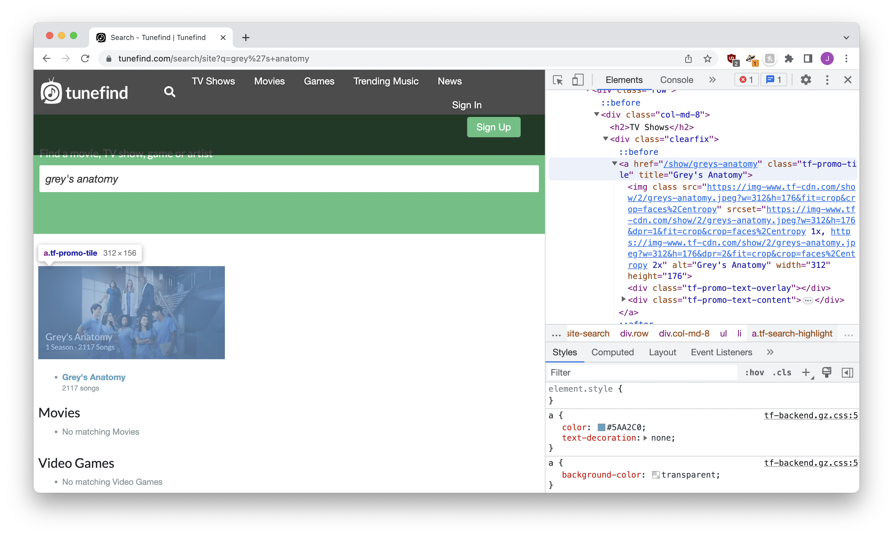
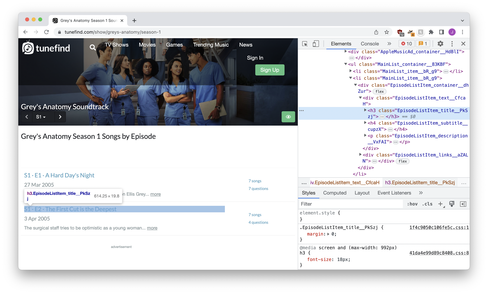
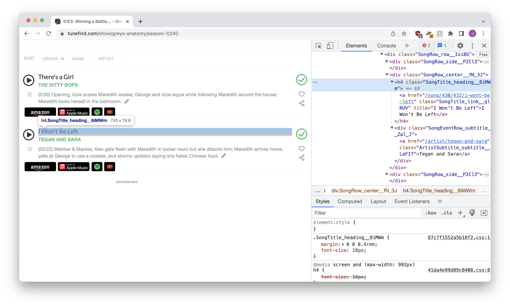

%load_ext dotenv
%dotenvHi, I’m Soma! You can find me on email at jonathan.soma@gmail.com, on Twitter at @dangerscarf, or maybe even on this newsletter I’ve never sent.
Introducing our old friend BeautifulSoup to our new best pal ChatGPT
This tutorial is two-in-one: how to build custom LangChain tools powered by large language models, along with how to combine a tiny bit of Python scraping abilities with GPT-4’s processing power!
Using everyone’s favorite library LangChain and the classic Python scraping library BeautifulSoup, we’ll look at three use cases:
- Extracting one single part of a page to feed ChatGPT information
- Converting a section (or sections) of a page into GPT-parseable data without doing much prep work
- Saving effort and money by pre-processing pages we’re sending to the LLM for analysis
Along the way you’ll learn how to build custom langchain tools, writng proper descriptions for them and providing the “right” kind of data when they’re done doing their work! By the end we’ll have a fully-functioning scraper that can answer natural-language questions about songs featured in TV shows.
Setup
We’ll start by setting up our API keys to access ChatGPT, along with importing a handful of tools.
from langchain.agents import initialize_agent, Tool
from langchain.tools import BaseTool
from langchain.chat_models import ChatOpenAI
from langchain.agents import tool
import requests
from bs4 import BeautifulSoup
import jsonFor this use case we’re going to use GPT-4, as opposed to GPT-3.5-turbo (which is much cheaper). I’ve found GPT-4 is a lot better at understanding fragmented HTML, and we do some Python/HTML cross-pollination later on in this project which requres all the brainpower GPT can muster.
llm = ChatOpenAI(model='gpt-4', temperature=0)Method one: Single-element extraction
Sometimes when you’re scraping it isn’t too hard: the URL is simple, and you’re just trying to grab one thing off of the page. Our first situation is like that: we’ll start on the Tunefind search results page.
The URL is a simple fill-in-the-blanks with https://www.tunefind.com/search/site?q=SHOW_NAME.

The results page provides a list of shows. We pull out the frst match – where class is tf-promo-tile – and send back both the URL to the show as well as the show name.
If we did this manually, it might look like the code below.
# Build the URL
query = "grey's anatomy"
url = f"https://www.tunefind.com/search/site?q={query}"
# Make the request
headers = { 'User-Agent': 'Mozilla/5.0 (X11; Ubuntu; Linux x86_64; rv:52.0) Gecko/20100101 Firefox/52.0' }
response = requests.get(url, headers=headers)
# Extract the link
soup = BeautifulSoup(response.text)
link = soup.select_one(".tf-promo-tile")
# Save the URL and name
url = f"https://www.tunefind.com{link['href']}"
name = link['title']That’s nice and fine, but we want to turn this into a LangChain tool that can be used to interact with the outside world. That requires two changes:
- We change this code into a function
- We write a description to the LLM can understand how it works
A simple version might look something like the code below. You provide a query and get back a sentence with the name and URL.
@tool
def tunefind_search(query: str) -> str:
"""Searches Tunefind for a given TV show. Required to find the base URL for
a given show so you can find its seasons, episodes or songs.
The input to this tool should be the show we're searching for."""
url = f"https://www.tunefind.com/search/site?q={query}"
headers = { 'User-Agent': 'Mozilla/5.0 (X11; Ubuntu; Linux x86_64; rv:52.0) Gecko/20100101 Firefox/52.0' }
response = requests.get(url, headers=headers)
soup = BeautifulSoup(response.text)
link = soup.select_one(".tf-promo-tile")
url = f"https://www.tunefind.com{link['href']}"
name = link['title']
return f"{name} can be found at {url}"To allow LangChain – and us! – to use this new search tool, we’ll create an agent that has access to it. When there’s a question that might be answered by our new tool (based on the tool description), the agent will run off and try to use it.
# Create a tool-using agent
tools = [tunefind_search]
agent = initialize_agent(tools, llm, agent="chat-zero-shot-react-description", verbose=True)Using this setup is as simple as agent.run with our question. Between the knowledge that the GPT already has and the ability to use the tool, it will try to answer our question!
# Get the results
result = agent.run("What's the Tunefind URL for Grey's Anatomy?")
print(result)
> Entering new AgentExecutor chain...
Thought: I need to find the base Tunefind URL for Grey's Anatomy.
Action:
```
{
"action": "tunefind_search",
"action_input": "Grey's Anatomy"
}
```
Observation: Grey's Anatomy can be found at https://www.tunefind.com/show/greys-anatomy
Thought:I now know the final answer
Final Answer: The Tunefind URL for Grey's Anatomy is https://www.tunefind.com/show/greys-anatomy
> Finished chain.
The Tunefind URL for Grey's Anatomy is https://www.tunefind.com/show/greys-anatomyPerfect! When given access to the tool GPT now sees the sentence "Grey's Anatomy can be found at https://www.tunefind.com/show/greys-anatomy" which allows it to determine the show’s URL.
Method two: Searching parts of the page
Sometimes the page you want to scrape is a little more complicated. You don’t just want a tiny piece of content of the page, but rather a specific portion of the page or several separate elements.
If we visit the episode list of a Grey’s Anatomy season we’re presented with a ton of links, one for each episode:

If we want GPT to have access a list of the seasons and their URLs, we have a few options. Let’s work through them one by one.
Scrape this page in a traditional way and return some sort of formatted list
While it’s certainly possible to extract the data through traditional scraping, we’re too lazy for that! We want GPT to do the work for us. That’s the whole reason we’re on this page to begin with!
Send the whole page to GPT and let it figure things out
Sending the whole page to GPT along with the question of “find the links” has two downsides:
First, the page might be too long for GPT to handle. When you send data to GPT along with a question, it can only handle so much text! Web pages often have too much content for GPT to be able to process them all at once.
Second, all of the unnecessary information drives up our OpenAI bill! We’re being charged on how much text we send and receive, so if we can pare things down we can be a little thrifter.
Carve out the portions of the page we’re interested in
With just a little familiarity with scraping, we can pursue a third option that leverages the benefits of the first two: we just grab the sections of the page that we’re interested in and send them on over to GPT along with our question!
We don’t need to do anything that would qualify as complicated scraping: no loops, nothing nested, no try/pass statements. Just “hey, take this data!”
Before it goes into a LangChain tool, the code might look like the code below.
# Build the URL and make the request
url = "https://www.tunefind.com/show/greys-anatomy"
headers = {'User-Agent': 'Mozilla/5.0 (X11; Ubuntu; Linux x86_64; rv:52.0) Gecko/20100101 Firefox/52.0'}
response = requests.get(url, headers=headers)
# Grab all of the elements with a class that includes with "EpisodeListItem_title"
soup = BeautifulSoup(response.text)
elements = soup.select("[class*='EpisodeListItem_title']")
str(elements)'[<h3 class="EpisodeListItem_title__PkSzj"><a href="/show/greys-anatomy/season-1">Season 1</a></h3>, <h3 class="EpisodeListItem_title__PkSzj"><a href="/show/greys-anatomy/season-2">Season 2</a></h3>, <h3 class="EpisodeListItem_title__PkSzj"><a href="/show/greys-anatomy/season-3">Season 3</a></h3>, <h3 class="EpisodeListItem_title__PkSzj"><a href="/show/greys-anatomy/season-4">Season 4</a></h3>, <h3 class="EpisodeListItem_title__PkSzj"><a href="/show/greys-anatomy/season-5">Season 5</a></h3>, <h3 class="EpisodeListItem_title__PkSzj"><a href="/show/greys-anatomy/season-6">Season 6</a></h3>, <h3 class="EpisodeListItem_title__PkSzj"><a href="/show/greys-anatomy/season-7">Season 7</a></h3>, <h3 class="EpisodeListItem_title__PkSzj"><a href="/show/greys-anatomy/season-8">Season 8</a></h3>, <h3 class="EpisodeListItem_title__PkSzj"><a href="/show/greys-anatomy/season-9">Season 9</a></h3>, <h3 class="EpisodeListItem_title__PkSzj"><a href="/show/greys-anatomy/season-10">Season 10</a></h3>, <h3 class="EpisodeListItem_title__PkSzj"><a href="/show/greys-anatomy/season-11">Season 11</a></h3>, <h3 class="EpisodeListItem_title__PkSzj"><a href="/show/greys-anatomy/season-12">Season 12</a></h3>, <h3 class="EpisodeListItem_title__PkSzj"><a href="/show/greys-anatomy/season-13">Season 13</a></h3>, <h3 class="EpisodeListItem_title__PkSzj"><a href="/show/greys-anatomy/season-14">Season 14</a></h3>, <h3 class="EpisodeListItem_title__PkSzj"><a href="/show/greys-anatomy/season-15">Season 15</a></h3>, <h3 class="EpisodeListItem_title__PkSzj"><a href="/show/greys-anatomy/season-16">Season 16</a></h3>, <h3 class="EpisodeListItem_title__PkSzj"><a href="/show/greys-anatomy/season-17">Season 17</a></h3>, <h3 class="EpisodeListItem_title__PkSzj"><a href="/show/greys-anatomy/season-18">Season 18</a></h3>, <h3 class="EpisodeListItem_title__PkSzj"><a href="/show/greys-anatomy/season-19">Season 19</a></h3>]'Check out the last line: when you use str(...) with a BeautifulSoup object (or a list of them) it returns the HTML representation of the objects (or in this case, a list).
Is the result ugly? Absolutely! It’s a mishmash of all of the parts of the page that might have information for us – the season links – shoehorned into an awful combination of Python list and HTML elements.
It doesn’t matter how we feel about it, though: will GPT be able to understand it? Absolutely! And that’s what counts.
Now let’s turn it into a LangChain tool. It’s the same process as last time, adding @tool, making it a function, adding a description. Let’s take a look at how we describe it:
Queries Tunefind for the episodes from a given season, given the URL of the season.
The input to this tool should be a URL to that season.
Season URLs are formed by takng the show's Tunefind URL and adding /season-NUM after it.
For example, if the show A Million Little Things is at https://www.tunefind.com/show/a-million-little-things/
Season 3 of A Million Little Things could be found at https://www.tunefind.com/show/a-million-little-things/season-3The important thing to note is that even though our last tool only found the show URL at https://www.tunefind.com/show/greys-anatomy, ChatGPT is smart enough to add /season-1 on it if it knows we’re looking for season 1.
@tool
def get_shows_from_season(url: str) -> str:
"""Queries Tunefind for the episode list from a given season, given the URL of the season.
The input to this tool should be a URL to that season.
Season URLs are formed by takng the show's Tunefind URL and adding /season-NUM after it.
For example, if a show's URL is https://www.tunefind.com/show/a-million-little-things/
you can find episode links for season 3 at https://www.tunefind.com/show/a-million-little-things/season-3
"""
headers = { 'User-Agent': 'Mozilla/5.0 (X11; Ubuntu; Linux x86_64; rv:52.0) Gecko/20100101 Firefox/52.0' }
response = requests.get(url, headers=headers)
soup = BeautifulSoup(response.text)
elements = soup.select("[class*='EpisodeListItem_title']")
return str(elements)Now that we’ve built it, it’s time to use our new tool.
Same process as before, but this time our agent has access to two tools: the tool that can find the show page, and the tool that can pull the episode lists from the episode page.
# Create a tool-using agent
tools = [tunefind_search, get_shows_from_season]
agent = initialize_agent(tools, llm, agent="chat-zero-shot-react-description", verbose=True)result = agent.run("What is the name and URL for episode 8 season 3 for Grey's Anatomy?")
print(result)
> Entering new AgentExecutor chain...
Thought: First, I need to find the base URL for Grey's Anatomy on Tunefind.
Action:
```
{
"action": "tunefind_search",
"action_input": "Grey's Anatomy"
}
```
Observation: Grey's Anatomy can be found at https://www.tunefind.com/show/greys-anatomy
Thought:Now that I have the base URL for Grey's Anatomy, I can find the episodes for season 3.
Action:
```
{
"action": "get_shows_from_season",
"action_input": "https://www.tunefind.com/show/greys-anatomy/season-3"
}
```
Observation: [<h3 class="EpisodeListItem_title__PkSzj"><a href="/show/greys-anatomy/season-3/2019">S3 · E1 · Time Has Come Today</a></h3>, <h3 class="EpisodeListItem_title__PkSzj"><a href="/show/greys-anatomy/season-3/2046">S3 · E2 · I Am a Tree</a></h3>, <h3 class="EpisodeListItem_title__PkSzj"><a href="/show/greys-anatomy/season-3/2047">S3 · E3 · Sometimes a Fantasy</a></h3>, <h3 class="EpisodeListItem_title__PkSzj"><a href="/show/greys-anatomy/season-3/2048">S3 · E4 · What I Am</a></h3>, <h3 class="EpisodeListItem_title__PkSzj"><a href="/show/greys-anatomy/season-3/2049">S3 · E5 · Oh, The Guilt</a></h3>, <h3 class="EpisodeListItem_title__PkSzj"><a href="/show/greys-anatomy/season-3/2050">S3 · E6 · Let The Angels Commit</a></h3>, <h3 class="EpisodeListItem_title__PkSzj"><a href="/show/greys-anatomy/season-3/2051">S3 · E7 · Where the Boys Are</a></h3>, <h3 class="EpisodeListItem_title__PkSzj"><a href="/show/greys-anatomy/season-3/2119">S3 · E8 · Staring at the Sun</a></h3>, <h3 class="EpisodeListItem_title__PkSzj"><a href="/show/greys-anatomy/season-3/2120">S3 · E9 · From a Whisper to a Scream</a></h3>, <h3 class="EpisodeListItem_title__PkSzj"><a href="/show/greys-anatomy/season-3/2190">S3 · E10 · Don't Stand So Close to Me</a></h3>, <h3 class="EpisodeListItem_title__PkSzj"><a href="/show/greys-anatomy/season-3/2191">S3 · E11 · Six Days (Part 1)</a></h3>, <h3 class="EpisodeListItem_title__PkSzj"><a href="/show/greys-anatomy/season-3/2252">S3 · E12 · Six Days (Part 2)</a></h3>, <h3 class="EpisodeListItem_title__PkSzj"><a href="/show/greys-anatomy/season-3/2216">S3 · E13 · Great Expectations</a></h3>, <h3 class="EpisodeListItem_title__PkSzj"><a href="/show/greys-anatomy/season-3/2306">S3 · E14 · Wishin' and Hopin'</a></h3>, <h3 class="EpisodeListItem_title__PkSzj"><a href="/show/greys-anatomy/season-3/2253">S3 · E15 · Walk on Water</a></h3>, <h3 class="EpisodeListItem_title__PkSzj"><a href="/show/greys-anatomy/season-3/2307">S3 · E16 · Drowning on Dry Land</a></h3>, <h3 class="EpisodeListItem_title__PkSzj"><a href="/show/greys-anatomy/season-3/2369">S3 · E17 · Some Kind of Miracle</a></h3>, <h3 class="EpisodeListItem_title__PkSzj"><a href="/show/greys-anatomy/season-3/2370">S3 · E18 · Scars and Souvenirs</a></h3>, <h3 class="EpisodeListItem_title__PkSzj"><a href="/show/greys-anatomy/season-3/2371">S3 · E19 · My Favorite Mistake</a></h3>, <h3 class="EpisodeListItem_title__PkSzj"><a href="/show/greys-anatomy/season-3/2476">S3 · E20 · Time After Time</a></h3>, <h3 class="EpisodeListItem_title__PkSzj"><a href="/show/greys-anatomy/season-3/2477">S3 · E21 · Desire</a></h3>, <h3 class="EpisodeListItem_title__PkSzj"><a href="/show/greys-anatomy/season-3/2554">S3 · E22 · The Other Side of This Life</a></h3>, <h3 class="EpisodeListItem_title__PkSzj"><a href="/show/greys-anatomy/season-3/2555">S3 · E23 · Testing 1-2-3</a></h3>, <h3 class="EpisodeListItem_title__PkSzj"><a href="/show/greys-anatomy/season-3/2556">S3 · E24 · Didn't We Almost Have It All</a></h3>]
Thought:I now know the name and URL for episode 8 of season 3 for Grey's Anatomy.
Final Answer: The name of episode 8 for season 3 of Grey's Anatomy is "Staring at the Sun" and the URL is https://www.tunefind.com/show/greys-anatomy/season-3/2119
> Finished chain.
The name of episode 8 for season 3 of Grey's Anatomy is "Staring at the Sun" and the URL is https://www.tunefind.com/show/greys-anatomy/season-3/2119Success again!
Note that along with understanding that giant mishmash of HTML, GPT also turned /show/greys-anatomy/season-3/2119 into https://www.tunefind.com/show/greys-anatomy/season-3/2119. So polite!
Method three: Convert your HTML
Let’s say things are even more complicated. Here’s a look at the songs from Season 1, Episode 3 of Grey’s Anatomy:

There’s just so much there! Long classes, a million tags, just a ton of garbage.
Here’s the thing: I don’t want to send all that to ChatGPT. I’m remarkably frugal, and while it’s great to be lazy and send everything to GPT, being lazy while using ChatGPT’s API incurs direct financial consequences. By reducing the data we send to GPT we get charged less, and that makes my wallet very very happy!
In this case we’re going to write a whole scraper for the page! When given a URL, we’ll give back a list of artists and song titles.
# Get the page
url = "https://www.tunefind.com/show/greys-anatomy/season-1/240"
headers = { 'User-Agent': 'Mozilla/5.0 (X11; Ubuntu; Linux x86_64; rv:52.0) Gecko/20100101 Firefox/52.0' }
response = requests.get(url, headers=headers)
# Scrape the content
soup = BeautifulSoup(response.text)
titles = soup.select("[class^='SongTitle']")
artists = soup.select("[class^='ArtistSub']")
results = [{'artist': a.text, 'title': t.text} for t, a in (zip(titles, artists))]
# Turn into a JSON string
json.dumps(results)'[{"artist": "The Ditty Bops", "title": "There\'s a Girl"}, {"artist": "Tegan and Sara", "title": "There\'s a Girl"}, {"artist": "The Ditty Bops", "title": "I Won\'t Be Left"}, {"artist": "stuart reid", "title": "I Won\'t Be Left"}, {"artist": "Reindeer Section", "title": "Wishful Thinking"}, {"artist": "Lisa Loeb", "title": "Wishful Thinking"}, {"artist": "Psapp", "title": "Hear You Breathing"}, {"artist": "Rilo Kiley", "title": "Hear You Breathing"}, {"artist": "Keane", "title": "You Are My Joy"}, {"artist": "Interpol", "title": "You Are My Joy"}, {"artist": "Psapp", "title": "Fools Like Me"}, {"artist": "Tegan and Sara", "title": "Fools Like Me"}]'A lot nicer than what we saw last time, right? While both work fine with GPT-4, this one took a little more effort but costs noticeably less.
One important thing to note is that we’re usng json.dumps , which converts the Python object – a list of dictionaries that include artists and titles – into the string representation. We need to do this because every LangChain tool must return a string: that’s what language models understand, so that’s what we send. It looks exactly the same, but without the json.dumps it just won’t work.
Now let’s apply this as our tool.
@tool
def get_songs_from_episode(url: str) -> str:
"""Queries Tunefind for the songs for the specific episode of a show.
The input to this tool should be the URL to an episode.
The URL will look like https://www.tunefind.com/show/greys-anatomy/season-6/4120
You must visit the season page to obtain an episode URL
"""
headers = { 'User-Agent': 'Mozilla/5.0 (X11; Ubuntu; Linux x86_64; rv:52.0) Gecko/20100101 Firefox/52.0' }
response = requests.get(url, headers=headers)
soup = BeautifulSoup(response.text)
titles = soup.select("[class^='SongTitle']")
artists = soup.select("[class^='ArtistSub']")
results = [{'artist': a.text, 'title': t.text} for t, a in (zip(titles, artists))]
return json.dumps(results)Notice the grumpy demand: You must visit the season page to obtain an episode URL. Just like ChatGPT likes to hallucinate journalism stories and academic papers, it loves to think it knows an episode URL just by guessing a number after the season. That sentence is enough to keep it in line.
Finally, we’ll string all three tools together. The show search, the episode lister, and the song lister.
# Buld the agent using all three tools
tools = [tunefind_search, get_shows_from_season, get_songs_from_episode]
agent = initialize_agent(tools, llm, agent="chat-zero-shot-react-description", verbose=True)And now, the moment of truth!
result = agent.run("What was the song by Lisa Loeb on Grey's Anatomy season 1 episode 3?")
print(result)
> Entering new AgentExecutor chain...
Thought: I need to find the base URL for Grey's Anatomy on Tunefind.
Action:
```
{
"action": "tunefind_search",
"action_input": "Grey's Anatomy"
}
```
Observation: Grey's Anatomy can be found at https://www.tunefind.com/show/greys-anatomy
Thought:Now I need to find the episodes for season 1.
Action:
```
{
"action": "get_shows_from_season",
"action_input": "https://www.tunefind.com/show/greys-anatomy/season-1"
}
```
Observation: [<h3 class="EpisodeListItem_title__PkSzj"><a href="/show/greys-anatomy/season-1/238">S1 · E1 · A Hard Day's Night</a></h3>, <h3 class="EpisodeListItem_title__PkSzj"><a href="/show/greys-anatomy/season-1/239">S1 · E2 · The First Cut is the Deepest</a></h3>, <h3 class="EpisodeListItem_title__PkSzj"><a href="/show/greys-anatomy/season-1/240">S1 · E3 · Winning a Battle, Losing the War</a></h3>, <h3 class="EpisodeListItem_title__PkSzj"><a href="/show/greys-anatomy/season-1/255">S1 · E4 · No Man's Land</a></h3>, <h3 class="EpisodeListItem_title__PkSzj"><a href="/show/greys-anatomy/season-1/256">S1 · E5 · Shake Your Groove Thing</a></h3>, <h3 class="EpisodeListItem_title__PkSzj"><a href="/show/greys-anatomy/season-1/280">S1 · E6 · If Tomorrow Never Comes</a></h3>, <h3 class="EpisodeListItem_title__PkSzj"><a href="/show/greys-anatomy/season-1/283">S1 · E7 · The Self-Destruct Button</a></h3>, <h3 class="EpisodeListItem_title__PkSzj"><a href="/show/greys-anatomy/season-1/378">S1 · E8 · Save Me</a></h3>, <h3 class="EpisodeListItem_title__PkSzj"><a href="/show/greys-anatomy/season-1/381">S1 · E9 · Who's Zoomin' Who?</a></h3>]
Thought:I found the episode URL for season 1 episode 3, now I need to get the songs from that episode.
Action:
```
{
"action": "get_songs_from_episode",
"action_input": "https://www.tunefind.com/show/greys-anatomy/season-1/240"
}
```
Observation: [{"artist": "The Ditty Bops", "title": "There's a Girl"}, {"artist": "Tegan and Sara", "title": "There's a Girl"}, {"artist": "The Ditty Bops", "title": "I Won't Be Left"}, {"artist": "stuart reid", "title": "I Won't Be Left"}, {"artist": "Reindeer Section", "title": "Wishful Thinking"}, {"artist": "Lisa Loeb", "title": "Wishful Thinking"}, {"artist": "Psapp", "title": "Hear You Breathing"}, {"artist": "Rilo Kiley", "title": "Hear You Breathing"}, {"artist": "Keane", "title": "You Are My Joy"}, {"artist": "Interpol", "title": "You Are My Joy"}, {"artist": "Psapp", "title": "Fools Like Me"}, {"artist": "Tegan and Sara", "title": "Fools Like Me"}]
Thought:I found the song by Lisa Loeb in Grey's Anatomy season 1 episode 3.
Final Answer: The song by Lisa Loeb in Grey's Anatomy season 1 episode 3 is "Wishful Thinking".
> Finished chain.
The song by Lisa Loeb in Grey's Anatomy season 1 episode 3 is "Wishful Thinking".Perfect!
Final thoughts
LangChain tools are great! While there are certainly other approaches to what we did above – external requests plugins, for example – combinng a small amount of manual scraping while letting GPT handle the details is a good combination of convenient and cost-effectve. Instead of sending all of the HTML (too big, too expensive) or just sending the text (too unpredictable, also potentially too large), carving out the bits you’re actually interested in can do a lot for a tiny project.
Combine this with something like kor or guardrails and your life is pretty much perfect.